Base 01 — Bike Sales in Europe
Ficha da base
| Fonte dos dados | Kaggle — Bike Sales in Europe (autor: sadiqshah): kaggle.com/datasets/sadiqshah/bike-sales-in-europe (arquivo Sales.csv) |
|---|---|
| Variável-alvo | Revenue — receita total das vendas (bicicletas, acessórios e vestuário), somada por mês. A base original é transacional: cada linha é uma venda, com quantidade, custo, preço, lucro e receita, em lojas de seis países. |
| Unidade | Unidade monetária da própria base (a moeda não é informada no Kaggle). Os modelos trabalham com a receita em milhões. |
| Frequência | Mensal (MS). Os dados originais são transacionais, sem frequência regular, e foram regularizados por soma mensal. |
| Período coberto | Base bruta: 01/01/2011 a 31/07/2016. Série mensal final: 01/2011 a 06/2016 (jul/2016 foi removido por estar incompleto). |
| Nº de observações | 113.036 transações brutas (112.036 após remover 1.000 duplicatas exatas) e 66 meses na série final (60 observados e 6 imputados). |
| Horizonte de previsão definido | h = 1 mês à frente; a origem da previsão é o último dia do mês anterior. |
| Justificativa da escolha da base | Série de receita com sazonalidade moderada (Fs = 0,33) e várias dimensões (categoria, país, gênero, idade) que permitem construir variáveis externas. Isso permite comparar modelos com e sem exógenas. Em contrapartida, a série é curta (66 meses) e tem mudanças de nível, o que a torna um bom teste de robustez. |
Gráfico da série-alvo
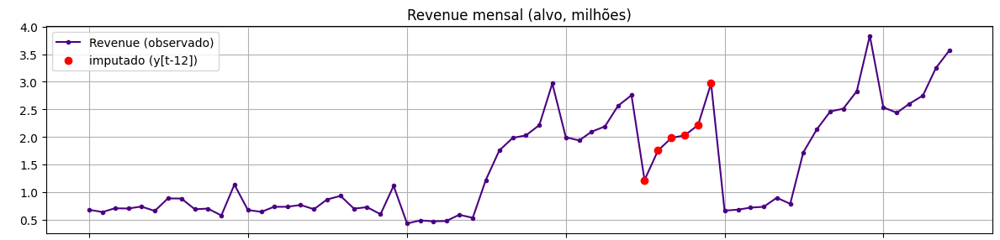
A série tem três regimes. De 2011 a meados de 2013 o nível é baixo e estável (cerca de 0,5 a 1,1 milhão por mês), com vendas só de Bikes. A partir de jul/2013, com a entrada de Accessories e Clothing, a receita salta para 1,2–3,0 milhões e os picos se repetem em dezembro. Em jan/2015 há uma queda abrupta para cerca de 0,65 milhão, nível semelhante ao do início da série, e uma nova subida a partir de jul/2015, chegando a 3,8 milhões em dez/2015 e a 3,6 milhões em jun/2016.
Os pontos em vermelho são os 6 meses imputados (jul–dez/2014). Eles não têm registros: jul/2014 só tem Accessories e Clothing, e de ago a dez/2014 não há nenhuma transação. A base também tem anos espelhados: 2012, 2015 e 2016 repetem 100% das combinações de 2011, 2013 e 2014. É um artefato de construção da base, e por isso não se usa lag de 24 meses. As mudanças de nível vêm do mix de produtos, não do calendário.
Variáveis externas
Dicionário de variáveis
| Variável | Descrição | Unidade | Fonte |
|---|---|---|---|
mes_sin, mes_cos | Encoding cíclico do mês do calendário | — | Calendário |
preco_medio | Média de Unit_Price nas transações do mês (indicador de mix, pois cada produto tem preço fixo) | moeda/unidade | Sales.csv (derivada) |
custo_medio | Média de Unit_Cost nas transações do mês (também reflete o mix) | moeda/unidade | Sales.csv (derivada) |
n_transacoes | Número de transações no mês | contagem | Sales.csv (derivada) |
idade_media | Idade média dos clientes no mês | anos | Sales.csv (derivada) |
pct_cat_* | Participação de Bikes, Accessories e Clothing na quantidade vendida | proporção | Sales.csv (derivada) |
pct_pais_* | Participação de cada país (Australia, Canada, France, Germany, United Kingdom, United States) na quantidade vendida | proporção | Sales.csv (derivada) |
pct_genero_* | Participação de cada gênero (F, M) dos clientes na quantidade vendida | proporção | Sales.csv (derivada) |
A base não traz nenhuma variável de preço planejado com variação no tempo: os 130 produtos têm um único Unit_Price e um único Unit_Cost em todo o período. Uma previsão de preço ou promoção conhecida antecipadamente teria que vir de fonte externa.
Disponibilidade na data de origem da previsão
| Variável | Disponível no futuro? | Tratamento adotado |
|---|---|---|
mes_sin, mes_cos |
conhecida antecipadamente | Usar o valor real do mês previsto (única variável contemporânea). |
preco_medio, custo_medio, idade_media, n_transacoes |
indisponível — vazamento | Defasadas em 1 mês (_lag1): só são conhecidas junto com o próprio alvo. |
pct_cat_*, pct_pais_*, pct_genero_* |
indisponível — vazamento | Defasadas em 1 mês (_lag1). |
Order_Quantity, Cost, Profit do mesmo mês |
indisponível — vazamento | Excluídas: não entram como preditoras, pois só são conhecidas junto com a receita. |
Todas as variáveis realizadas entram com lag de 1 mês, então o valor do mês t−1 está disponível no fim desse mês, na origem da previsão do mês t (h = 1). A versão anterior do trabalho usava preco_medio e custo_medio do mesmo mês como se fossem preço planejado, o que era vazamento. Como cada produto tem preço fixo, a média mensal só varia pelo mix vendido, que é um resultado realizado. Nos meses inválidos (jul–dez/2014), as externas realizadas são preenchidas com o último valor válido (ffill), sem olhar para o futuro. Como pct_genero_F = 1 − pct_genero_M, só uma delas entra no pool do SARIMAX, para evitar colinearidade perfeita.
Gráficos das variáveis externas
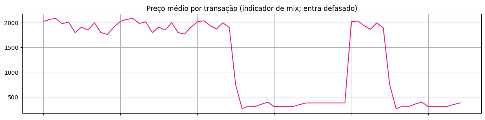
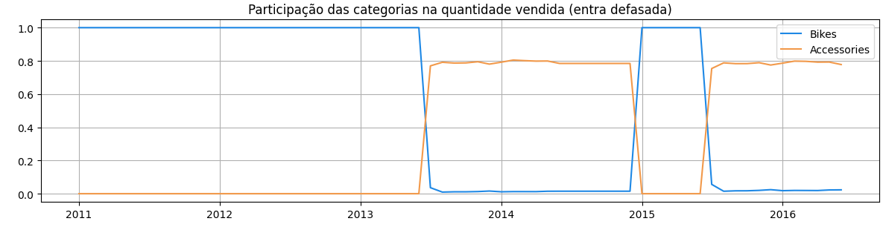
O preço médio por transação cai de cerca de 2.000 para cerca de 300–400 quando Accessories e Clothing entram no mix (jul/2013 a dez/2014 e jul/2015 em diante). Isso mostra que a variável mede o mix, e não uma decisão de preço. A participação de Bikes cai de 100% para cerca de 2% nesses mesmos períodos, o que explica o espelhamento da base.
Limpeza e exploração
Diagnóstico
| Valores ausentes | Nenhum valor ausente nas colunas da base bruta. Na série mensal há 6 meses inválidos: jul/2014 (incompleto, só Accessories e Clothing, sem nenhuma Bike) e ago–dez/2014 (sem nenhum registro). Ainda há jul/2016, também incompleto e no fim da série. Os meses de jul–dez/2014 foram imputados com o valor do mesmo mês do ano anterior (y[t−12]), e jul/2016 foi removido. |
|---|---|
| Duplicidades | 1.000 linhas duplicadas exatas, removidas antes da agregação (113.036 → 112.036 linhas). |
| Irregularidades temporais | Os dados são transacionais, sem frequência regular, e a série tem lacuna em ago–dez/2014. A série foi regularizada em calendário mensal completo (MS), por soma mensal, incluindo os meses sem registro. Isso mantém m = 12 representando 12 meses e evita que os lags cruzem o buraco. Além disso, os anos de 2012, 2015 e 2016 repetem 100% das combinações de 2011, 2013 e 2014 (anos espelhados). |
| Valores atípicos (outliers) | Por IQR no nível da transação, Revenue tem 14.765 atípicos (13,06%) e Order_Quantity tem 0. Na série mensal, nenhum mês é atípico por IQR. Os atípicos transacionais refletem a diferença de preço entre bicicletas e acessórios, e foram mantidos. |
Decisões de limpeza e transformação
As duplicatas exatas foram removidas, pois não representam vendas distintas. Os atípicos de Revenue foram mantidos: são a diferença natural entre uma bicicleta e um acessório, e não erros de registro.
Jul/2014 e jul/2016 só têm Accessories e Clothing, sem nenhuma Bike (categoria presente em todos os demais meses). São meses incompletos, no último mês de cada bloco de extração, e não podem ser tratados como reais. Jul/2016 está no fim da série e foi removido, então o teste não o inclui. Os meses inválidos do meio (jul–dez/2014) foram tratados como ausentes e imputados por y[t−12], usando só informação anterior à lacuna. Os meses imputados nunca são origem de validação ou de teste.
Como o preço e o custo de cada produto são fixos (0 de 130 produtos com mais de um preço ou custo), a média mensal desses campos é só um indicador de mix e entra defasada. Transformações foram tratadas como hiperparâmetros: o log no SARIMAX (a configuração escolhida o usa) e o Box-Cox no Holt-Winters (a configuração escolhida não o usa). O alvo é modelado em milhões, por estabilidade numérica, e as exógenas do SARIMAX são padronizadas (StandardScaler ajustado só no treino de cada origem). Pelo mesmo motivo de espelhamento, não se usa lag de 24 meses.
Decomposição STL
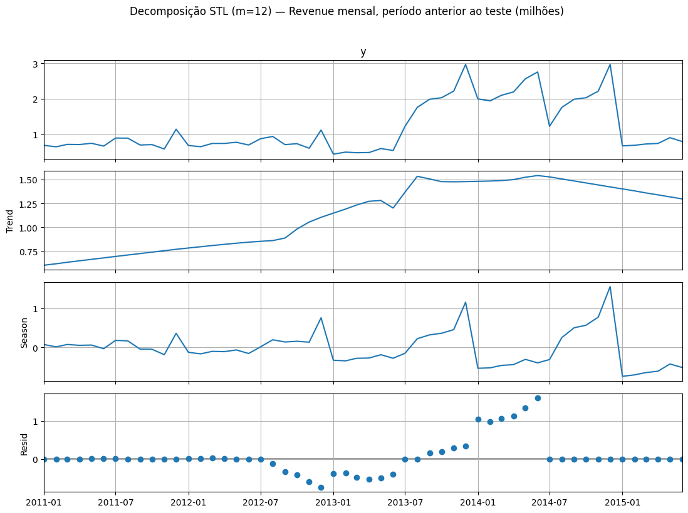
A STL (robusta, m = 12) usa só o período anterior ao teste (treino + validação), para que a escolha de m não use informação do bloco de teste.
Tendência
O nível é estável em 2011–2012, sobe de forma acentuada em meados de 2013, quando entram Accessories e Clothing, e fica em patamar mais alto em 2014. A tendência cai na parte final por causa do retorno ao patamar baixo em jan/2015. A força de tendência alta reflete essas mudanças de nível mais do que um crescimento contínuo.
Sazonalidade
A sazonalidade é moderada, com picos recorrentes em dezembro. Parte do componente sazonal com m = 6 e m = 12 captura o salto de julho, que é uma mudança estrutural e não um padrão de calendário. Essa é uma limitação a declarar. Para escolher o período sazonal foram testados m = 3, 4, 6 e 12. Os dois maiores valores de Fs definiram os candidatos do SARIMAX e do Holt-Winters: m ∈ {6, 12}.
Resíduo
O resíduo é concentrado nos meses de quebra (jul/2013, jan/2015) e na lacuna imputada. Fora desses períodos fica próximo de zero. Ainda há estrutura remanescente, porque a STL não captura mudanças bruscas de nível.
Força da sazonalidade / tendência
| Métrica | Valor | Interpretação |
|---|---|---|
| Força da tendência (m = 12) | 0,509 | Moderada a alta, puxada pelas mudanças de nível. Com m = 3, 4 e 6 chega a 0,78–0,81. |
| Força da sazonalidade (m = 12) | 0,330 | Moderada. Para m = 6 é 0,395 (a maior), para m = 4 é 0,040 e para m = 3 é 0,000. |
Estacionariedade (treino + validação, n = 42): a série em nível é não estacionária (ADF p = 1,000 e KPSS p = 0,021). Com a diferença simples Δ1 fica estacionária (ADF p < 0,001 e KPSS p = 0,100). Com Δ12 isolada não (ADF p = 0,968), e com Δ1Δ12 (ADF p = 0,019 e KPSS p = 0,100) sim. O grid do SARIMAX testa d, D ∈ {0, 1}.
Feature engineering
Features construídas
| Tipo | Descrição | Usada em quais modelos |
|---|---|---|
| Lags da variável-alvo | lag_1, lag_2, lag_3, lag_6, lag_12 (5 features) | Random Forest, XGBoost. O SARIMAX não usa lags do alvo como exógenas, pois os termos AR/MA já os modelam. |
| Lags de variáveis externas | 15 externas defasadas em 1 mês (_lag1): preco_medio, custo_medio, idade_media, n_transacoes, 3 de categoria (pct_cat_*), 6 de país (pct_pais_*) e 2 de gênero (pct_genero_*) | Random Forest e XGBoost (as 15). SARIMAX: combinações de 3 itens do pool (a escolhida usa idade_media_lag1, pct_cat_Accessories_lag1 e pct_pais_Germany_lag1). |
| Estatísticas de janela móvel | Média e desvio-padrão móveis de 3, 6 e 12 meses, calculados sobre y.shift(1) (6 features: roll_mean_* e roll_std_*) | Random Forest, XGBoost |
| Features de calendário | Mês do ano (via encoding cíclico). Não há dia da semana nem feriado, porque a série é mensal. | Random Forest, XGBoost. SARIMAX: apenas como item do pool (conjuntos calendario). |
| Encoding cíclico | mes_sin = sen(2π·mês/12) e mes_cos = cos(2π·mês/12) (2 features) | Random Forest, XGBoost, SARIMAX (conjuntos que incluem calendário) |
| Outras features criadas | Variável alvo transformada em log (somente SARIMAX). O modo do alvo das árvores (nivel ou diferenca) foi tratado como hiperparâmetro. Holt-Winters usa só o próprio alvo. | SARIMAX (log), Random Forest e XGBoost (modo) |
No total, Random Forest e XGBoost usam 28 features: 11 do alvo (5 lags + 6 de janela), 2 de calendário e 15 externas.
Tratamento de NA gerado pelos lags/janelas
Para as árvores, as primeiras linhas sem histórico suficiente (warm-up de 12 meses, por causa de lag_12 e das janelas de 12 meses) não entram como linhas de treino: a primeira linha com todas as features é jan/2012. Para o SARIMAX só falta o _lag1 da primeira linha, então ele é ajustado a partir de fev/2011. Todos os SARIMAX, com ou sem exógenas, partem desse mesmo ponto, para que as configurações sejam comparáveis.
As mesmas features (FEATURE_COLS) são usadas no Random Forest e no modelo de especialização (XGBoost). Todas as janelas usam shift(1), e todas as externas realizadas entram defasadas em 1 mês, então nada do que entra na linha do mês t é desconhecido no fim de t−1.
Protocolo walk-forward
| Janela inicial de treino | 36 meses: 01/2011 a 12/2013. A janela é expansiva: na origem t o treino usa todos os meses anteriores a t. |
|---|---|
| Horizonte de previsão | h = 1 mês. |
| Passo de avanço | 1 mês: depois de prever t, o mês entra no histórico e o modelo é reajustado. |
| Nº de origens de previsão (folds) | 24: 12 de validação (escolha de hiperparâmetros) e 12 de teste (resultado final). |
| Datas de origem | Validação: 2014-01 a 2014-06 e 2015-01 a 2015-06. São os 12 últimos meses observados antes do teste; os meses imputados (jul–dez/2014) não servem de origem. Teste: 2015-07 a 2016-06. |
| Conjunto de teste final | Os últimos 12 meses da série, de 01/07/2015 a 01/06/2016. Os hiperparâmetros escolhidos na validação ficam fixos no teste, e nenhuma decisão usa esse bloco. |
Os 4 modelos desta base (SARIMAX, Holt-Winters, Random Forest e XGBoost) usam exatamente as mesmas origens, o mesmo horizonte e o mesmo bloco de teste, e foram otimizados pelo mesmo critério (MAE walk-forward nas mesmas origens de validação). Como referência há também dois modelos sem parâmetros, avaliados nas mesmas origens: o ingênuo (y[t−1], MAE na validação 375.259) e o ingênuo sazonal (y[t−12], o mesmo mês do ano anterior, MAE na validação 1.635.225).
Modelos e hiperparâmetros
SARIMAX
| Espaço de busca | Etapa 1 (triagem): p, q ∈ {0,1,2}, d ∈ {0,1}, P, Q ∈ {0,1}, D ∈ {0,1}, m ∈ {6, 12}, em nível e em log (576 ajustes, 3 sem convergência). Etapa 2a: as 2 melhores ordens por AIC de cada grupo (transformação, d, D, m), sem exógenas e com 3 conjuntos-base (128 configurações). Etapa 2b: as 5 melhores ordens × todas as 454 combinações de 3 exógenas do pool de 15 itens (2.270 configurações, 27.240 ajustes). |
|---|---|
| Critério | AIC/BIC apenas como triagem, dentro de cada grupo com a mesma diferenciação e transformação. A decisão final é o menor MAE walk-forward na validação, entre as configurações com exógenas. |
| Variáveis externas incluídas | idade_media_lag1, pct_cat_Accessories_lag1 e pct_pais_Germany_lag1 (padronizadas). pct_pais_Germany_lag1 aparece nas 20 melhores combinações. |
| Configuração final | SARIMAX(0,1,2)(1,1,0)6, alvo em log (previsões revertidas com exp). MAE de validação = 175.159, contra 251.536 do mesmo modelo sem exógenas (referência SARIMA). |
Holt-Winters (referência univariada)
| Tendência | Multiplicativa, não amortecida |
|---|---|
| Sazonalidade | Multiplicativa |
| Período sazonal | 12 meses |
| Parâmetros de suavização | α, β e γ estimados por máxima verossimilhança em cada origem do walk-forward (os valores não são fixados nem registrados no notebook). Grade completa de 50 configurações (tendência nenhuma/aditiva/multiplicativa, amortecida ou não, sazonalidade nenhuma/aditiva/multiplicativa, m ∈ {6, 12}, com e sem Box-Cox). 7 delas falharam e foram descartadas. MAE de validação = 246.085. |
Random Forest
| Espaço de busca | n_estimators ∈ {100, 200, 300, 500}; max_depth ∈ {None, 3, 5, 8}; min_samples_split ∈ {2, 4, 8}; min_samples_leaf ∈ {1, 2, 4}; max_features ∈ {sqrt, 0,5, 1,0}; modo do alvo ∈ {nível, diferença}. |
|---|---|
| Método de otimização | Busca aleatória (ParameterSampler, 20 sorteios × 2 modos = 40 configurações) com o mesmo walk-forward de validação (12 origens) dos outros modelos. |
| Configuração final | n_estimators = 300, max_depth = None, min_samples_split = 4, min_samples_leaf = 4, max_features = sqrt, modo = nível. MAE de validação = 286.150. |
Modelo de especialização — XGBoost
| Principais hiperparâmetros | n_estimators, max_depth, learning_rate, subsample, colsample_bytree, min_child_weight, reg_alpha, reg_lambda, além do modo do alvo (nível ou diferença). |
|---|---|
| Intervalos testados | n_estimators ∈ {100, 200, 400, 600}; max_depth ∈ {2, 3, 4, 6}; learning_rate ∈ {0,01, 0,03, 0,05, 0,1, 0,2}; subsample ∈ {0,6, 0,8, 1,0}; colsample_bytree ∈ {0,6, 0,8, 1,0}; min_child_weight ∈ {1, 3, 5}; reg_alpha ∈ {0, 0,1, 1}; reg_lambda ∈ {1, 5, 10}. |
| Método de busca | Busca aleatória (40 sorteios × 2 modos = 80 configurações), pelo MAE do mesmo walk-forward de validação. |
| Configuração final | n_estimators = 600, max_depth = 6, learning_rate = 0,1, subsample = 1,0, colsample_bytree = 0,6, min_child_weight = 3, reg_alpha = 0, reg_lambda = 1, modo = nível. MAE de validação = 269.004. |
Resumo dos MAE de validação
| Modelo | MAE na validação |
|---|---|
| SARIMAX | 175.159 |
| Holt-Winters | 246.085 |
| XGBoost | 269.004 |
| Random Forest | 286.150 |
Ingênuo (referência, y[t−1]) | 375.259 |
Ingênuo sazonal (referência, y[t−12]) | 1.635.225 |
Na validação o SARIMAX foi o melhor, mas esse resultado não se repetiu no teste (ver resultados). Os hiperparâmetros foram escolhidos só por esse critério.
Resultados comparativos (MAE)
| Modelo | MAE | × ingênuo | × ingênuo sazonal | Ranking |
|---|---|---|---|---|
| SARIMAX | 568.564 | 1,22 | 0,43 | 3º |
| Holt-Winters | 237.760 | 0,51 | 0,18 | 1º |
| Random Forest | 609.078 | 1,31 | 0,46 | 4º |
| XGBoost (especialização) | 564.866 | 1,21 | 0,42 | 2º |
Ingênuo (referência, y[t−1]) | 465.221 | 1,00 | 0,35 | — |
Ingênuo sazonal (referência, y[t−12]) | 1.334.140 | 2,87 | 1,00 | — |
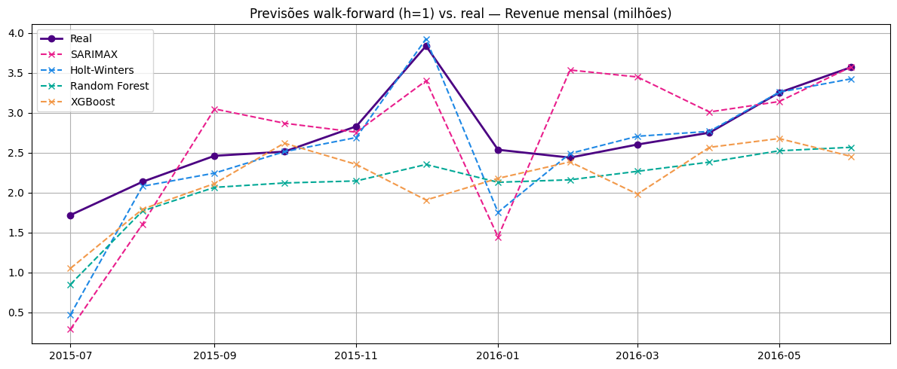
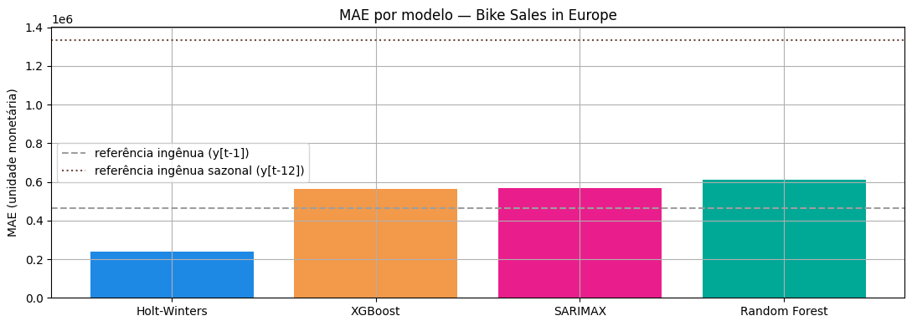
Em vitórias por origem de previsão (menor erro absoluto no mês, entre os 4 modelos), o Holt-Winters venceu 8 dos 12 meses do teste, o SARIMAX 2, o XGBoost 2 e o Random Forest 0. Tempo médio por origem: Holt-Winters 0,09 s, SARIMAX 0,30 s, Random Forest 0,37 s e XGBoost 0,92 s (as duas referências ingênuas são instantâneas).
As duas referências. O ingênuo sazonal (y[t−12]) é o pior de todos (MAE 1.334.140, 2,9 vezes o ingênuo simples). Repetir o mesmo mês do ano anterior erra muito porque o nível da série muda com o mix de produtos, e não com o calendário: em jan–jun/2016 o mês de referência (jan–jun/2015) está no patamar baixo, enquanto o real fica entre 2,4 e 3,6 milhões, com erros de 1,8 a 2,8 milhões. Nas origens de jul–dez/2015 o mês de referência é um valor imputado (jul–dez/2014). Todos os quatro modelos ficam abaixo dele (razões de 0,18 a 0,46), mas só o Holt-Winters também ficou abaixo do ingênuo simples.
Por que o Holt-Winters venceu. Ele foi o único modelo que ficou abaixo da referência ingênua (razão 0,51, contra 1,21 a 1,31 dos outros). A série é curta (66 meses), com sazonalidade moderada (Fs = 0,33) e mudanças de nível que vêm do mix de produtos, não de variáveis que os modelos consigam antecipar. O Holt-Winters multiplicativo, com sazonalidade de 12 meses e tendência multiplicativa, se reajusta a cada origem e acompanha o nível recente. Random Forest e XGBoost tiveram quase todos os resíduos positivos (100% e 92%), ou seja, subestimaram a receita no teste. Isso é coerente com o limite das árvores de não extrapolar além da faixa vista no treino, numa série com saltos de nível, mas essa explicação é uma hipótese consistente com os resíduos, e não foi testada à parte. O SARIMAX, que lidera na validação (175.159), piorou muito no teste (568.564). Os maiores erros do SARIMAX e do Holt-Winters estão em jul/2015, quando a série sobe de nível, e os do Random Forest e do XGBoost em dez/2015. As variáveis externas, aliás, não ajudaram o SARIMAX fora da amostra: seus coeficientes não são significativos (ver página 10), e escolher a melhor entre 2.270 configurações com só 12 pontos de validação favorece o sobreajuste à validação.
Análise dos resíduos
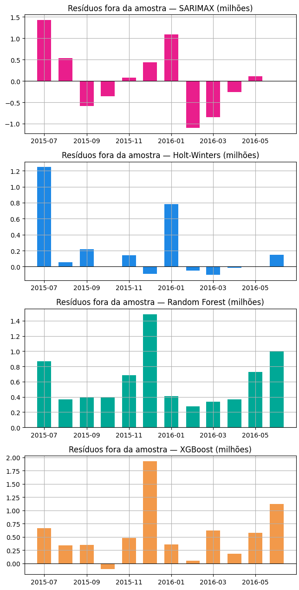
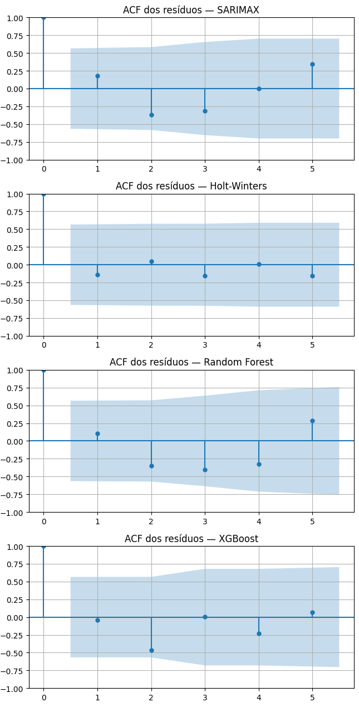
| Modelo | Estatística Ljung-Box | p-valor | Interpretação |
|---|---|---|---|
| SARIMAX | lag 3: 4,68 lag 6: 9,26 | lag 3: 0,197 lag 6: 0,159 | Sem indício de autocorrelação. Viés médio +43.297 (50% dos resíduos positivos) e desvio-padrão de 748.239, o maior dos quatro. |
| Holt-Winters | lag 3: 0,76 lag 6: 5,60 | lag 3: 0,858 lag 6: 0,469 | Sem indício de autocorrelação. Viés médio +193.462 (58% positivos) e desvio-padrão de 407.833. |
| Random Forest | lag 3: 5,24 lag 6: 12,64 | lag 3: 0,155 lag 6: 0,049 | Há indício de autocorrelação (p < 0,05 no lag 6). Viés médio +609.078 (100% positivos) e desvio-padrão de 362.356. |
| XGBoost | lag 3: 3,70 lag 6: 8,17 | lag 3: 0,295 lag 6: 0,226 | Sem indício de autocorrelação. Viés médio +547.124 (92% positivos) e desvio-padrão de 538.038. |
Viés. Resíduo = real − previsto, então viés positivo é subestimação. Random Forest e XGBoost subestimam sistematicamente (viés médio de 609 mil e 547 mil, com 100% e 92% de resíduos positivos). O Holt-Winters tem viés pequeno e é puxado por dois meses (jul/2015 e jan/2016). O SARIMAX tem viés próximo de zero, mas erros grandes de sinais alternados (jul/2015 e jan/2016 positivos, fev e mar/2016 negativos), por isso o maior desvio-padrão.
Padrões remanescentes e autocorrelação. Em SARIMAX, Holt-Winters e XGBoost o Ljung-Box (lags 3 e 6) não rejeita ausência de autocorrelação. No Random Forest o lag 6 rejeita (p = 0,049), e seus resíduos são sempre positivos, com o pico em dez/2015 (cerca de 1,5 milhão). Com apenas 12 pontos por modelo o teste tem baixo poder: p-valor alto indica ausência de evidência, não prova de independência.
Diagnóstico dentro da amostra do SARIMAX final (ajustado em treino + validação): Ljung-Box com p = 0,998 (lag 6) e p = 0,988 (lag 12), sem autocorrelação residual nos dados de ajuste. O bom ajuste dentro da amostra contrasta com o erro fora dela, o que reforça o sobreajuste à validação.
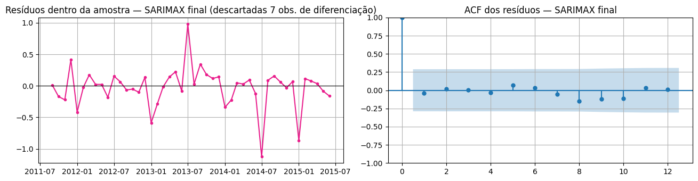
Importância das features
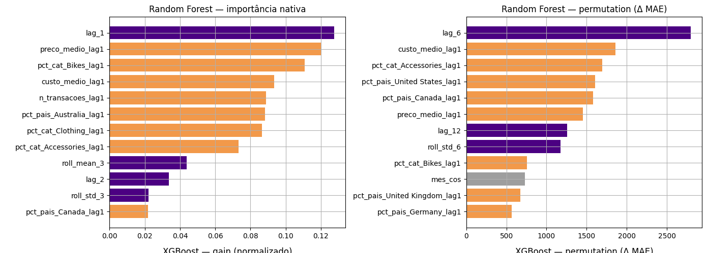
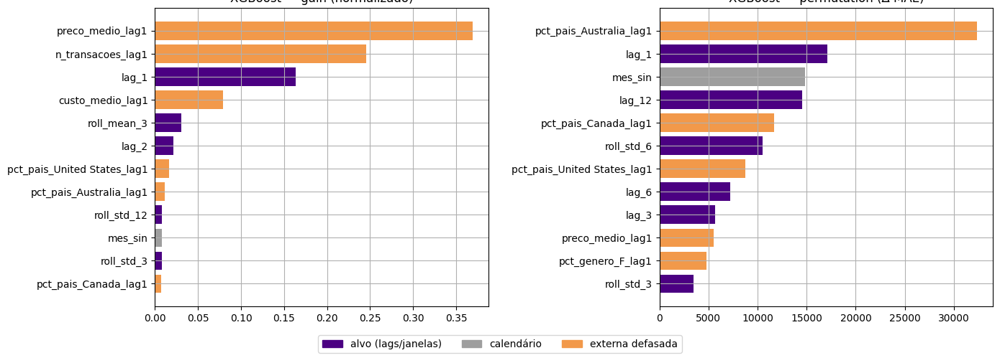
As barras laranja são externas defasadas, as roxas são lags e janelas do alvo e as cinza são calendário. A permutação é avaliada no bloco de teste, no mesmo espaço do alvo do modelo.
SARIMAX — coeficientes das variáveis externas
| Variável | Coeficiente | Sinal | Significância |
|---|---|---|---|
idade_media_lag1 | 0,0071 (EP 0,0744) | positivo | p = 0,924 — não significativo |
pct_cat_Accessories_lag1 | 0,2627 (EP 0,2802) | positivo | p = 0,349 — não significativo |
pct_pais_Germany_lag1 | 0,0890 (EP 0,0916) | positivo | p = 0,332 — não significativo |
Exógenas padronizadas e alvo em log(milhões): o coeficiente é o efeito de +1 desvio-padrão da exógena sobre o log da receita. Na parte ARIMA, só o termo AR sazonal (ar.S.L6 = −0,576; p < 0,001) é significativo. ma.L1 (−0,452; p = 0,295) e ma.L2 (0,211; p = 0,411) não são.
Random Forest e XGBoost. Na importância nativa do Random Forest, lag_1 lidera, seguido de preco_medio_lag1, pct_cat_Bikes_lag1 e custo_medio_lag1. No XGBoost (gain), preco_medio_lag1 (cerca de 0,37), n_transacoes_lag1 (cerca de 0,25) e lag_1 (cerca de 0,16) concentram a maior parte. As externas defasadas somam 69,9% da importância nativa do Random Forest e 74,4% do gain do XGBoost. Na permutação, o ranking muda: no Random Forest lideram lag_6, custo_medio_lag1 e pct_cat_Accessories_lag1, e no XGBoost pct_pais_Australia_lag1 lidera com folga, seguida de lag_1, mes_sin e lag_12. A permutação não confirma a importância nativa, que favorece variáveis contínuas com muitos valores distintos (como preço médio e custo médio). Os aumentos de MAE por permutação são pequenos frente ao MAE do modelo (da ordem de milhares contra centenas de milhares), ou seja, nenhuma feature isolada explica o desempenho.
Papel das externas e disponibilidade. As externas têm papel relevante nas árvores, mas não melhoram o resultado final (esses modelos ficaram atrás do Holt-Winters, que não usa nenhuma). No SARIMAX, nenhuma externa é significativa. Todas as externas usadas estão defasadas em 1 mês e portanto são conhecidas na origem da previsão; o calendário é conhecido antecipadamente.
Conclusão desta base
O melhor modelo na base Bike Sales in Europe foi o Holt-Winters (MAE 237.760, 0,51 × o modelo ingênuo, 8 vitórias em 12 origens), seguido por XGBoost (564.866), SARIMAX (568.564) e Random Forest (609.078). Foi o único modelo que superou a referência ingênua (465.221); todos superaram a ingênua sazonal (1.334.140), que erra por não acompanhar as mudanças de nível. O modelo univariado venceu os que usam variáveis externas, porque a série é curta (66 meses) e o desempenho depende sobretudo de acompanhar as mudanças de nível e a sazonalidade moderada (Fs = 0,33), e não de variáveis explicativas.
Limitações específicas desta base. (i) Série curta, com 6 dos 66 meses imputados. (ii) Mudanças estruturais de nível (jul/2013, jan/2015, jul/2015) causadas pela entrada e saída de categorias no mix, e não por padrão de calendário. (iii) Anos espelhados (2012, 2015 e 2016 repetem 2011, 2013 e 2014), o que impede o uso de lag de 24 meses. (iv) Teste de apenas 12 pontos, logo o Ljung-Box tem baixo poder e a comparação entre modelos é sensível a poucos meses (jul/2015 e dez/2015). (v) Random Forest e XGBoost subestimam sistematicamente a receita no teste, o que é coerente com a dificuldade das árvores em extrapolar níveis. (vi) O SARIMAX vencedor na validação (175.159) piorou no teste (568.564), e suas exógenas não são significativas, indicando sobreajuste à validação (2.270 configurações para 12 origens). (vii) O resíduo do Random Forest mostra indício de autocorrelação (lag 6, p = 0,049).
Decisões metodológicas que precisaram de ajuste. Jul/2016 removido (mês incompleto) e jul/2014 tratado como ausente; meses sem registro (ago–dez/2014) imputados com y[t−12], sem uso de dados do teste; todas as variáveis realizadas defasadas em 1 mês para evitar vazamento (inclusive preco_medio e custo_medio, que refletem só o mix); pct_genero_F descartada do pool por colinearidade com pct_genero_M; m escolhido pela força da sazonalidade (m ∈ {6, 12}); busca do SARIMAX em duas etapas (AIC/BIC como triagem e MAE walk-forward como decisão); e os quatro modelos otimizados pelo mesmo walk-forward nas mesmas origens de validação.